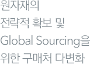

직무소개
각 분야별 상세한 직무소개
(RJP,Realistic Job Preview)를
통해, 입사지원시 지원자분에게
정확하고 실제적인 도움을
드리고자 합니다.
구매
직무소개
구매(Procurement)는 기업 경영의 핵심 축인 ‘원가’와 관련 깊은 직무입니다.
예전과는 달리 구매부서의 목적은 Buying Power를 통한 단순한 원가절감에만 있지 않습니다.
다양한 구매 기법을 통한 원자재의 전략적 확보 및 Global Sourcing을 위한 구매처 다변화에
더욱 초점이 맞추어지고 있습니다.
관련업체/유관부서와의 Co-Working이 중요한 만큼 Communication/Negotiation Skill이
중요하며, 건전한 윤리의식 또한 요구되는 직무입니다.
요구자질
- 원가 및 손익관리에 대한 기본적인 이해.
- 직물/가죽/부자재 등 소재 관련 지식.
- 패션 아이템/제품에 대한 지식.
- 의사소통 능력/협상 능력
직무내용
- 1.브랜드에서 발주하는 원부자재에 대한 단가협상/납기/클레임에 대한 전반적인 관리를 합니다.
- 2.전략적 구매를 위한 국내외 Sourcing을 수행합니다. 아이템/원단별로 최적조건을 찾기 위해
국내외 업체들에 대한 리서치 활동을 벌이며, 이에 대한 결과를 분석합니다. - 3.협력업체에 대한 평가를 실시합니다. 합리적인 평가 기준안을 설계하여 정량화된 평가자료를 도출합니다. 이를 근거로 협력업체들을 평가하여 거래업체간 건전한 경쟁을 유도합니다.
비전
구매직무를 경험함으로 인한 강점은 패션의 기본이 되는 원료/소재에 관한 이해를 넓힐 수 있다는
것입니다. 그러나 설득/협상 상황이 많고 현장에서 구매처와 의사소통할 경우가 많기 때문에,
논리적 사고능력 및 커뮤니케이션 능력이 우수한 지원자에게 적합한 직무입니다.
우븐/니트/레더/부자재의 특성 및 원가구조를 비롯하여 생산공정과 Sourcing Route에 대한
전문지식을 축적함으로써 구매/생산을 아우르는 통합 소싱 전문가로 성장할 수 있습니다.
또한 소재/원가구조에 대한 이해를 바탕으로 상품기획(MD)으로의 직무이동하는 길도
열려있습니다.
세부직무
구매
생산

직무소개
생산에서의 원가절감이란 협력업체에 원가부담을 떠넘기는 것이 아닙니다. 생산 직무의 본질은
프로세스 혁신을 통해 원가를 절감하여 이익을 발생시키고,
협력업체와의 건전한 상생(Win-Win) 관계 구축을 모색하는 직무입니다.
나아가서 중장기적 생산전략을 기획/구축하여 국내외 안정적인 소싱기지를 확보하는 임무를 맡고
있습니다. 각종 생산단가를 업체와의 협의를 통해 결정하는 일을 수행하기 때문에
Negotiation/Communication/건전한 윤리의식이 요구되는 직무입니다.
요구자질
- 원가 및 손익관리에 대한 기본적인 이해.
- 생산관리 관련 지식.
- 패션 아이템/제품에 대한 지식.
- 의사소통 능력/협상 능력.
직무내용
- 1.전사적 생산전략을 기획/구축하고, 안정적이며 우량한 생산처를 확보합니다.
- 2.통합생산을 통한 Know-How의 공유 및 원가경쟁력 강화방안을 모색합니다.
- 3.생산단계별 비효율/낭비요인을 제거하여, 최적 프로세스를 구축하고 Lead Time을
단축시킵니다. - 4.생산전반에 대한 품질관리/지도를 실시하여, 제품 Quality향상에 노력합니다.
비전
중저가형 SPA브랜드들의 부상으로 인해 소비자들의 가격탄력성이 높아진 것이 사실입니다.
그러므로 현재에 안주하지 않고 끊임없이 생산프로세스 혁신을 위한 새로운 제안활동을 벌이고,
신규 소싱처 확보에 노력해야 합니다.
이를 위해서는 제품/원단/생산공정에 대한 기본적인 이해를 바탕으로,
국내외 생산기지 확보를 위한 글로벌 감각이 필요합니다.
생산직무는 패션산업의 기본을 이루는 원가/소싱/납기 등에 대한 지식을 체계적으로
학습할 수 있는 장점이 있어 통합 소싱 전문가로 성장할 수 있습니다.
또한 향후 상품기획(MD)Brand 영업 등 유관직무로 이동기회도 제공됩니다.
세부직무
생산